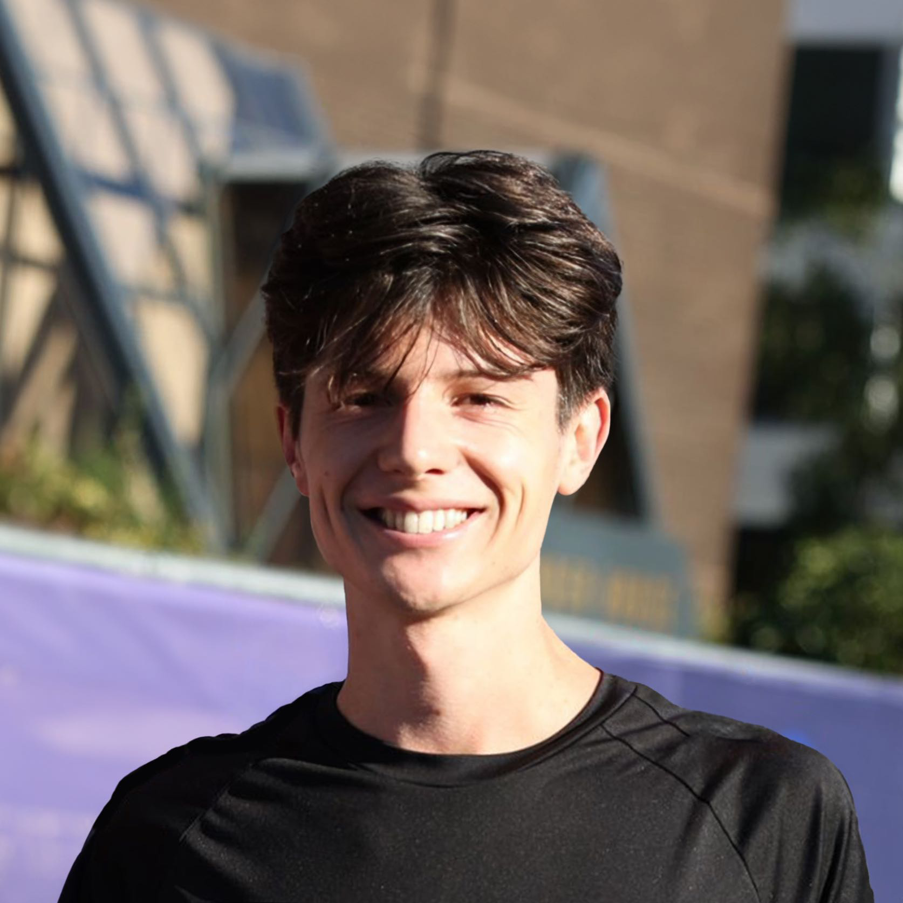

I'm a graphic designer based in London, working across design systems, visual identity, code & AI.
Please read my CV here. You can find my contact information here.
My work focuses on building visual systems rather than static outputs. I’m interested in how design principles can be translated into adaptable workflows, using code, generative tools & structured thinking to create visuals that are expressive & scalable.
I recently graduated from Camberwell College of Arts with First Class Honours in BA Graphic Design & a Diploma in Apple Development. Alongside my independent practice, I’ve worked across branding, apparel, digital design & AI-assisted creative workflows, including concept development, prototyping & visual system design.
My background combines graphic design with a strong interest in technology, experimentation & systems thinking. I’ve explored tools such as TouchDesigner, ComfyUI, Swift, Python, JavaScript & web development, using them to prototype interactive processes, generative pipelines & creative tools that support visual communication rather than replace it.
I also bring significant experience from freelance practice, where I’ve delivered 500+ projects across branding, 3D & apparel design for an international client base. This has helped me develop a balance between creative ambition & practical delivery, adapting to different briefs, industries & audiences while maintaining a clear visual standard.
More recently, my interest in AI has led me to generative systems, research & prototypes to explore creative automation. I’m particularly interested in the future of design as a system: how AI, code & traditional design thinking can work together to create more flexible, engaging & intelligent visual outcomes.
Some of my favourite projects can be found here, or you can browse my pdf portfolio here.